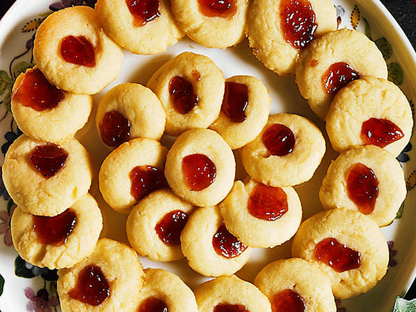
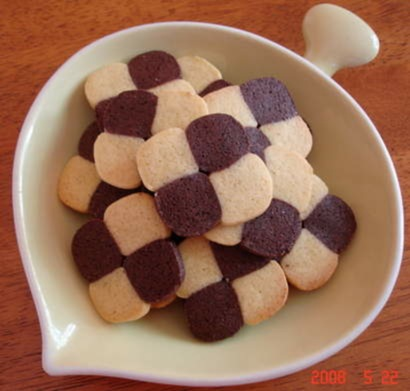
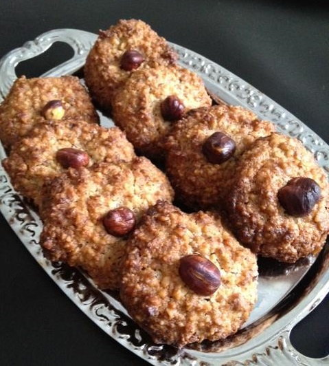

Småkakor
Småkakor är gott och oftast inte jättesvåra att baka. Här kommer 3 recept på olika sorter.
Syltkakor
Recept från Köket.se
Du behöver
- 200 g smör
- 0,75 dl strösocker
- 1 äggula
- 1 krm bakpulver
- 1 tsk vaniljsocker
- 4,5-5 dl vetemjöl
- Röd vinbärsgelé
Gör såhär
- Mixa ihop smör och socker, rör ner äggulan.
- Rör sist ner bakpulver och vanilj blandat med mjöl till en smidig deg.
- Lägg den i plastfilm i kylen 1 timme.
- Sätt ugnen på 175°.
- Rulla ut två rullar cirka 4 cm tjocka. Skiva degen, forma runda kakor, lägg på plåt med bakpapper.
- Tryck en fördjupning i varje kaka och klicka i gelé. Grädda mitt i ugnen 8-10 minuter.

Schackrutor
Recept från ICA
Du behöver
- 125 g smör
- 1/2 dl strösocker
- 2 1/2 dl vetemjöl (2,5 dl motsvarar 150 g)
Till ljusa degen
- 2 tsk vaniljsocker
Till den mörka degen
- 1 msk kakao
Gör såhär
- Blanda snabbt ihop smör, socker och mjöl till en deg, gärna i en matberedare.
- Dela degen i två lika stora delar.
- Blanda vaniljsocker i den ena deghalvan och kakao i den andra.
- Dela både den ljusa och den mörka delen i två delar. Rulla ut dem till längder, ca 30 cm. Tryck till och forma rullarna fyrkantiga. Lägg ihop de fyra längderna, en ljus och en mörk underst och en mörk och en ljus överst så de bildar ett rutmönster.
- Låt dem ligga i kylskåpet ca 30 minuter så att det går lättare att skära.
- Sätt ugnen på 200°C.
- Skär längden i ca 1/2 cm tjocka skivor, och lägg dem på en plåt med bakplåtspapper.
- Grädda kakorna mitt i ugnen ca 10 minuter. Låt svalna på galler.

Nöttoppar
Recept från leila.se
Du behöver
- 50 g smör
- 200 g hasselnötter
- 1 dl strösocker
- 1 ekologiskt ägg
- Hasselnötter till garnering
Gör så här
- Sätt ugnen på 175 grader.
- Smält smöret.
- Mixa hasselnötterna till ett fint pulver i matberedare.
- Blanda nötterna med smör, strösocker och ägg.
- Forma smeten med fingrarna till toppar på en plåt med bakplåtspapper, sätt en hasselnöt i varje topp. Grädda gyllene i mitten av ugnen i cirka 18 minuter.
- Låt svalna på plåten.
